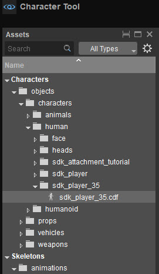
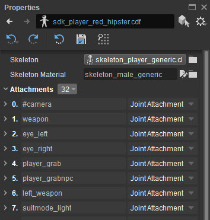
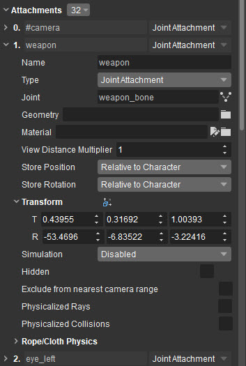
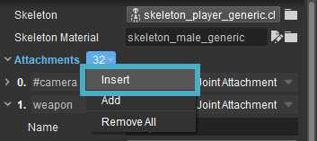
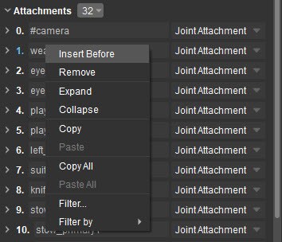
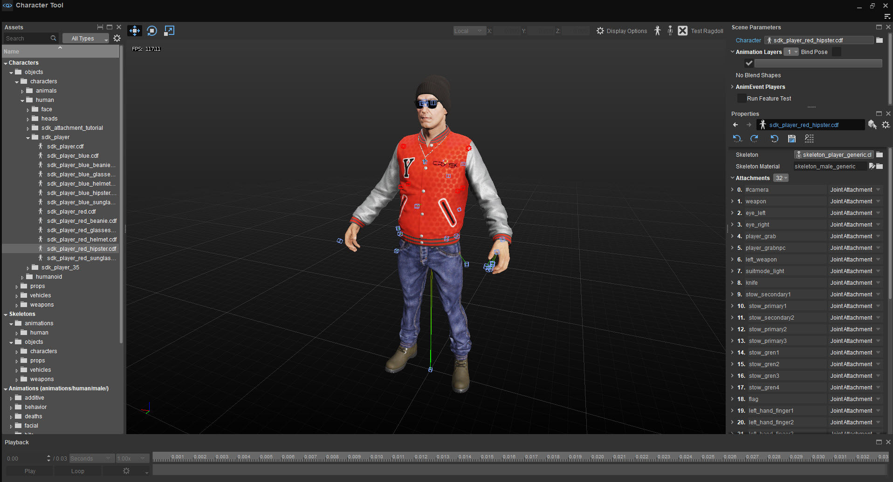
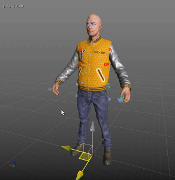
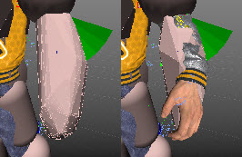
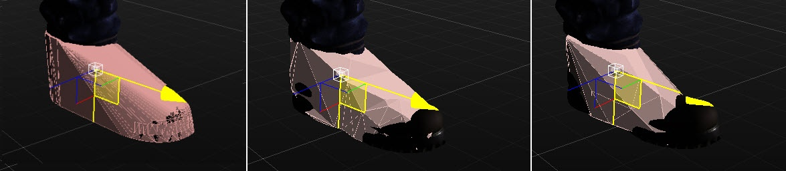

Overview
To change a character attachment you will need to load a character first. You can do this by using menu File -> Open, or locating a character file in the Asset Explorer and double clicking on it.
Selecting the Character
Make sure that you have have the character asset entry selected. You can either double click to select from the Assets panel, or click on the Character button in Scene Parameters to open a dialog window to explore to the folder where your character is:
Using the Assets panel:

Character in Assets panel
Attachment List and Properties
Now you can observe the list of existing attachments (if any) in the Properties Panel:

Attachments list
By clicking the arrow to the left, this expands the attachments properties.

Attachment expanded
Adding New Attachments
To add a new attachment you can click on the button next to the "Attachments" text to open the drop down list and use the Insert or Add function.
- Using Insert, add the new attachment to the top of the list.
- Using Add, appends the new attachment to the bottom of the list.

Insert Attachment
Or ordered directly in the list via the right click context menu:

Insert through context menu
Attachment Types
Attachments come in multiple forms, depending on what sort of attachment you want to attach to the character.
Attachments are split into several categories:
- Joint - Typical use case, weapon stow locations
- Face - Directly attaching to a face on the mesh
- Skin - These are the what the visible portion of the characters are built from (SDK_player is built from multiple skin files, for the shoes, trousers, jacket etc...)
- Proxy - Attach proxies to be used for the attachment collisions or ragdoll physics
- PRow - A Row of bones linked together in a logical order. (used for building cloth simulation setups)
- Vcloth 2.0 - see here.
Example character with a fully configured attachment list:

Fully set up character
For more information please see the Attachment System Tutorial - Character Tool for how to setup and use these attachment correctly.
Generating and Editing Character Physics Proxies
This allows you to edit the existing character physical proxies as attachments in the Character Editor, replace them with newly created ones, or just create proxies from scratch for new characters.
Created proxies are based on the character render mesh initially, but can be fully tweaked if necessary (geometry type, size, transformation). The proxies are saved to a companion .cgf file next to the skeleton .chr file, and are picked up during .chr loading (thus, .cdf is not needed for loading them, nor is it permanently updated with the new attachments data on disk).
In the Character Tool, the Type and Purpose values of physics proxies are Proxy Attachment and Main Physics respectively.
Creating Physics Proxies
Click Create/Edit Main Character Proxies
at the top of the Character Tool window. This adds all existing proxies as editable attachments (named $ + joint name).
- Hold Shift and left click on the render mesh (note that the character must be in the default pose).
Clicking selects the closest character bone, then builds a mesh of vertices affected by all its children, up to already physicalized ones, and approximates it with a primitive. Therefore, proxies should be created from "leaves" to the root:

Proxy editing
As you can see in the .gif above, after you have generated a proxy, you can change its shape, size and rotation in the Properties.
When holding shift and left clicking on an existing proxy, the properties for that attachment will be expanded in the Properties.
If the proxies were not generated during this session, changing Geometry Type will just try to match the general shape of the previous type (unless the original type was a mesh, in which case it will be used as a source for primitive approximation). If necessary, the proxy attachment can be created manually on a specific joint (Purpose should be set to Main Physics, and the name must be set to $ + joint name).
Mesh Proxies
It is also possible to create more detailed character physics proxies that approximate the shape of the mesh. This is done as follows:
- Select the proxy you want to change.
- Go to Properties -> Transform -> Type and change this to Mesh.
The proxy will now look much more detailed:

Mesh proxiesIf you think the polygon count for this proxy is too high or not high enough, you can change it with the Mesh Simplification property:

Mesh Simplification 0, 2, and 5
Ragdoll Proxies
Ragdoll proxies are the proxies that are switched to when a character takes a certain amount of damage, so that the character model's fall animations are automatically generated based on what the model's ragdoll proxies hit.
This is especially useful for performance reasons, because when a character is dead, it doesn't need detailed physics proxies anymore to register hits, only ragdoll proxies to make sure the limbs move in a realistic way when falling, flying through the air, etc.
Creating Ragdoll Proxies
Click the Edit Ragdoll Proxies button
While it's possible to edit and switch between the two multiple times, only the currently selected proxy set will be saved to disk when saving the character (this way it's possible to discard saving ragdoll proxies if it turns out the character is fine with having a single set of proxies). Similarly, the Test Ragdoll option will ragdollize the currently selected set of proxies, not hardcoded lod 1 as in-game ragdolls would.
Keep in mind that if LoD 1 (ragdoll) proxies are requested and not present yet, they will be initialized to LoD 0 (main) proxies.